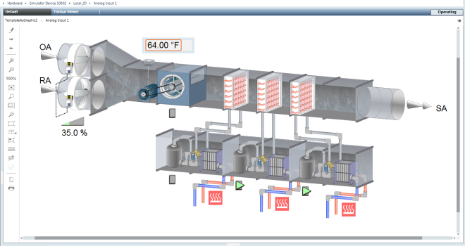

Graphics Viewer

This section provides background information for displaying, view, and command graphics in your facility. For related procedures or workflows, see the step-by-step section.

This section provides background information for displaying, view, and command graphics in your facility. For related procedures or workflows, see the step-by-step section.